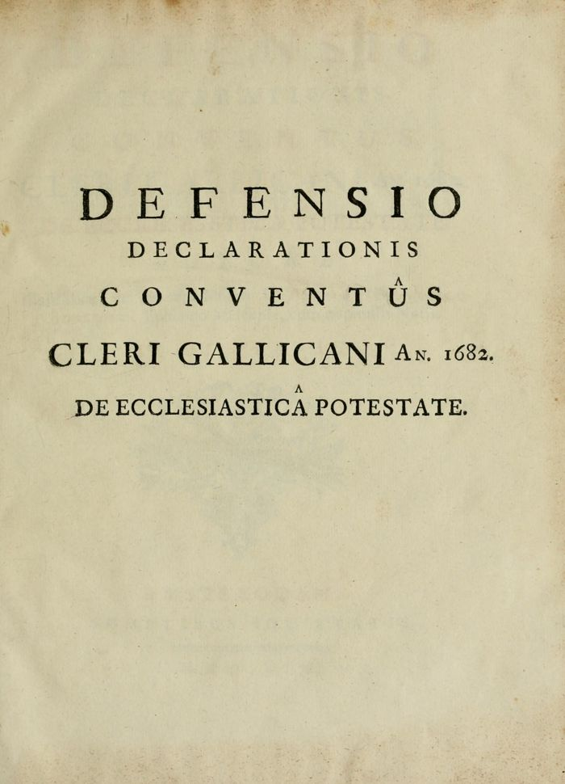

“Pater meus Rex” (p. 128)
Latin: p. 128, scan, second paragraph, citing Chrysostom, Hom. 23 on Romans. Highlighted: the sentence behind Lecky’s note.

… and not undeservedly: for from the very beginning of the human race, kings were held in the place of parents, as even the name Abimelech, common to the kings of Palestine, shows. For Abimelech is translated in Latin as My father the king; these well-known and obvious things I do not intend to confirm by arguments.
Original Latin
… nec immeritò: ab ipso enim generis humani exordio, Reges parentum loco habitos, vel illud Regibus Palæstinis commune Abimelechi nomen ostendit. Abimelech enim Latinè vertitur, Pater meus Rex; quæ nota & obvia argumentis confirmare non est animus.
Lecky’s English: “‘Abimelech,’ which was a name originally common to all the kings of Palestine, signifies ‘My father king’”. “Originally” is Lecky’s; Bossuet says only “common”. Lecky’s “lib. i. c. 3” is not this page’s chapter (see the status note above).
Editor’s notes on this page
Lecky says Bossuet observes that “Abimelech”, a name common to all the kings of Palestine, means “my father king”. The remark is in the Defensio: Bossuet writes that from the very beginning of the human race kings were held in the place of parents, as even the name Abimelech common to the Palestinian kings shows, for “Abimelech” is Latinised Pater meus Rex.
Further down the rabbit hole
Sources that Lecky cites in the notes next to the ones that cite this page.
- Bianchi, Traité de la puissance ecclésiastiqueAn Ultramontane friar on when a people may depose its king, and the Scot who ‘sold his pen’ to James I
- Locke, Two Treatises of GovernmentNo taxation without consent, and the pulpit’s favourite absolutist
- Hallam, Literature of Europe and Constitutional HistoryHow Lecky quotes Hallam on persecution
- Hooker, Of the Laws of Ecclesiastical PolityLaws without consent are “no better than mere tyranny”, and what Hooker meant by consent
- Suárez, Defensio fidei catholicae, Book VIMay the Pope release subjects from their oath to a king? The Jesuit reply to James I
- De Thou, Histoire universelle, book 96A pope praises the murder of a king


Backlinks
Every place in Rationalism in Europe that links to this page (generated automatically when the site is built).